Base Operators
- rxsci.ops.assert_(predicate, name='', error=<class 'ValueError'>)
Ensure that predicate evaluates to True for all items
If any of item on the source observable evaluates to False, then error is emitted on the on_error handler.
- Parameters
predicate – A function to evaluate each item.
name – [Optional] A firendly name to display with the error.
error – [Optional] The error to emit when predicate evaluates to False.
- Returns
An observable returning the source items, and completing on error if any source pair evaluates to False.
- rxsci.ops.assert_1(predicate, name='', error=<class 'ValueError'>)
Ensures that predicate evaluates to True for all pairs of item / previous item
If any of the lag1 pair on the source observable evaluates to False, then error is emitted on the on_error handler.
The source can be an Observable or a MuxObservable.
- Parameters
predicate – A function to evaluate each item.
name – [Optional] A firendly name to display with the error.
error – [Optional] The error to emit when predicate evaluates to False.
- Returns
An observable returning the source items, and completing on error if any source pair evaluates to False.
- rxsci.ops.count(reduce=False)
Counts the number of items emitted in the source Observable.
The source can be an Observable or a MuxObservable.
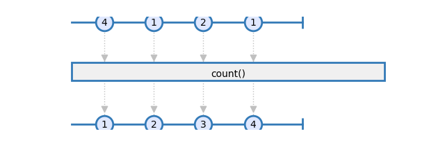
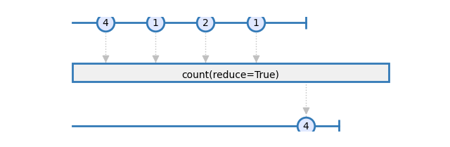
- Parameters
reduce – [Optional] Emit an item for each source item when reduce is False, otherwise emits a single item on completion.
- Returns
An observable emitting the number of source items that have been emitted.
- rxsci.ops.distinct(key_mapper=None)
Returns an observable sequence that contains only distinct elements according to the key_mapper. Usage of this operator should be considered carefully due to the maintenance of an internal lookup structure which can grow large.
The source must be a MuxObservable.
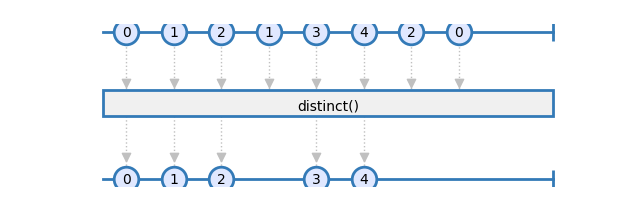
This operator is similar to the RxPY distinct operator but with much better performance thanks to the usage of sets. Meanwhile this implementation does not allow to specify a comparer: The key must be hashable.
- Parameters
key_mapper – [Optional] A function to compute the comparison key for each element.
- Returns
An operator function that takes an observable source and returns an observable sequence only containing the distinct elements, based on a computed key value, from the source sequence.
- rxsci.ops.do_action(on_next=None, on_error=None, on_completed=None, on_create=None)
Executes an function on reception of selected events
The source can be an Observable or a MuxObservable.
- Parameters
on_next – [Optional] function to execute on item reception
on_completed – [Optional] function to execute on completion
on_error – [Optional] function to execute on error
- Returns
An observable identical to the source observable.
- rxsci.ops.filter(predicate)
Filters the items of an observable sequence based on a predicate.
The source can be an Observable or a MuxObservable.
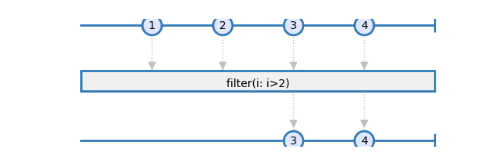
Examples
>>> rs.operators.filter(lambda value: value < 10)
- Parameters
predicate – A function to test each source item for a condition.
- Returns
An observable that emits items from the source observable that satisfy the condition. The type of the returned observable is the same than the source observable.
- rxsci.ops.first()
Emits the first element of an observable
The source can be an Observable or a MuxObservable.
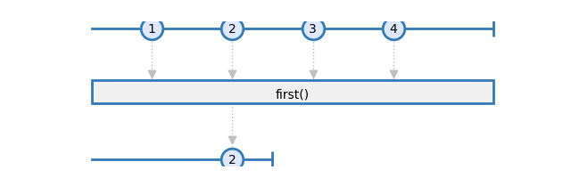
- Returns
An observable emitting the first item from the source observable.
- rxsci.ops.flat_map()
Projects each element of iterable source items as a new item.
The source can be an Observable or a MuxObservable.
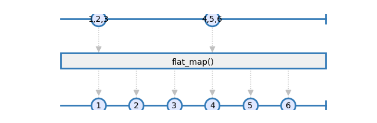
- Returns
An observable whose items are the result of iterating on each items of the source observable.
- rxsci.ops.from_pandas(dataframe)
Creates an observable from a pandas dataframe
- Parameters
dataframe – A pandas dataframe
- Returns
An observable that emits one nametuple per row in the dataframe.
- rxsci.ops.group_by(key_mapper, pipeline)
Groups items of according to a key mapper
The source must be a MuxObservable.
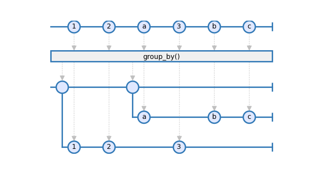
Examples
>>> rs.ops.group_by(lambda i: i.category, rs.ops.count)
- Parameters
key_mapper – A function to extract the key from each item
pipeline – The Rx pipe to execute on each group.
- Returns
A MuxObservable with one observable per group.
- rxsci.ops.identity()
emits an Observable identical to the source Observable.
The source can be an Observable or a MuxObservable.
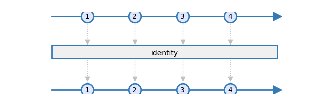
- Returns
An observable emitting the items of the source observable.
- rxsci.ops.last()
Emits the last element of an observable
The source can be an Observable or a MuxObservable.

- Returns
An observable emitting the last item from the source observable.
- rxsci.ops.map(mapper)
Projects each element of an observable into a new form.
The source can be an Observable or a MuxObservable.
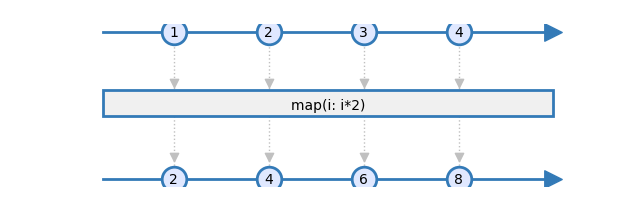
- Parameters
mapper – A transform function to apply to each source element.
- Returns
An observable emitting the result of invoking the transform function on each source items.
- rxsci.ops.multiplex(pipeline)
Transforms an Observable to a MuxObservable
All operations done in pipeline then operate on a MuxObservable. The source must be an Observable.
- Parameters
pipeline – The pipeline that will process the multiplexed items.
- Returns
An Observable where the source items have been multiplexed to a MuxObservable, then processed by the pipeline transformations, and finally de-multiplexed to an Observable.
- rxsci.ops.progress(name, threshold, measure_throughput=True)
Prints the progress on item processing
Prints the number of items that have been processed every threshold items.
The source can be an Observable or a MuxObservable.
- Parameters
name – Name associated to this progress.
threshold – Period of display for the progress, in unit of item count.
- Returns
The source observable.
- rxsci.ops.scan(accumulator, seed, reduce=False)
Computes an accumulate value on each item of the source observable.
Applies an accumulator function over an observable sequence and returns each intermediate result.
The source can be an Observable or a MuxObservable.
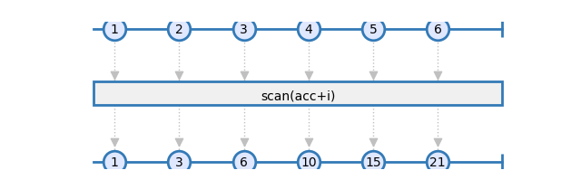
Examples
>>> rs.ops.scan(lambda acc, i: acc + i, seed=0, reduce=False)
- Parameters
accumulator – A function called on each item, that accumulates tranformation results.
seed – The initial value of the accumulator. On MuxObservables, seed is deep copied for each observable, or called if seed is callable.
reduce – [Optional] Emit an item for each source item when reduce is False, otherwise emits a single item on completion.
- Returns
An observable sequence containing the accumulated values.
- rxsci.ops.starmap(mapper)
Unpacks arguments grouped as tuple items of an observable and return an observable of values by invoking the mapper function with star applied unpacked items as positional arguments.
The source can be an Observable or a MuxObservable.
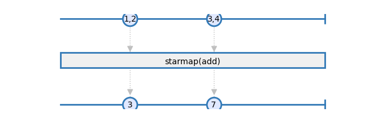
Example
>>> rs.ops.starmap(lambda x, y: x + y)
- Parameters
mapper – A transform function to invoke with unpacked elements as arguments.
- Returns
An observable containing the results of invoking the mapper function with unpacked items of the source observable.
- rxsci.ops.start_with(padding)
Prepends some items to an Observable
The source must be a MuxObservable.
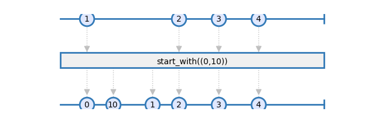
- Parameters
mapper – A transform function to invoke with unpacked elements as arguments.
- Returns
An Observable emitting the items of the source Observable, preceded by the values of padding.
- rxsci.ops.take(count)
Emits a specified number of items from the start of an observable.
The source can be an Observable or a MuxObservable.
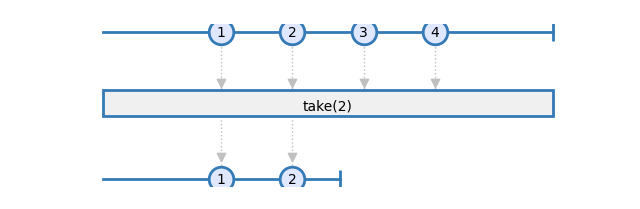
- Parameters
count – the number of items to emit
- Returns
An observable emitting the first count items from the source observable.
- rxsci.ops.tee_map(*args, join='zip')
Processes several operators chains simultaneously on the same source observable. This operator allows to do multiple processing on the same source, and combine the results as a single tuple object.
The source can be an Observable or a MuxObservable.
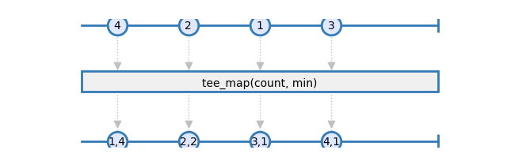
Examples
>>> rx.from_([1, 2, 3, 4]).pipe( >>> rs.ops.tee_map( >>> rs.ops.count(), >>> rs.math.min(), >>>))
- Parameters
args – list of operators that will process the source observable concurrently
join – [Optional] If set to ‘zip’, then all processings are zipped together. If set to ‘merge’ items are emitted by tee map as they are emitted by each arg pipeline. If set to ‘combine_latest’, then the last value of each processing are combined.
- Returns
An observable containing tuples of the items emitted by each branch of the tee.
- rxsci.ops.to_pandas(columns=None)
Converts an observable to a pandas dataframe
If colums is not specified, then items must be namedtuples and the columns names are infered from the fields of the namedtuple objects.
The source must be an Observable.
- Parameters
columns – [Optional]
- Returns
An observable the emits a single item. This item is a pandas DataFrame.
- rxsci.ops.with_latest_from(*sources)
Merges the specified observables into one observable sequence by creating a tuple only when the source observable sequence produces an element. The source observable is subscribed once at least one item has been received on each other sources.
The source must be an Observable.
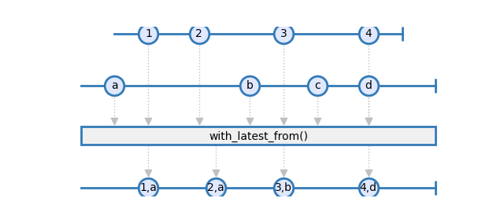
Examples
>>> rs.ops.with_latest_from(obs1)
- Parameters
sources – Sequence of observables.
- Returns
An observable sequence containing the result of combining elements of the sources into a tuple.